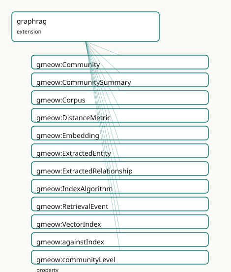

GMEOW GraphRAG Module
- IRI: https://blackcatinformatics.ca/gmeow/slices/graphrag
- Tier: extension
Group: extensions
What This Slice Covers
This slice owns 34 terms and contributes 11 mapping or projection rows. Use it when its terms match the native fact you want to preserve; use the linkage tables to see how those facts leave GMEOW for consumer vocabularies.
Dependencies
gmeow:slices/aigmeow:slices/entitiesgmeow:slices/kernelgmeow:slices/observationsgmeow:slices/provenance
Consumers
ProjectLillith — a GraphRAG deployment whose corpus, embeddings, indexes, retrievals, and derived entity graph must be auditable provenance, not pipeline internals (P15).
Local Map

Examples
Lillith Dataset
- Source:
slices/extensions/graphrag/examples/lillith-dataset.ttl - GMEOW terms:
gmeow:BuildActivity,gmeow:Builder,gmeow:Dataset,gmeow:Distribution,gmeow:ImportActivity,gmeow:License,gmeow:Organization,gmeow:Repository,gmeow:buildConfigUri,gmeow:buildOutput - External prefixes:
xsd
# SPDX-FileCopyrightText: 2026 Blackcat Informatics® Inc. <paudley@blackcatinformatics.ca>
# SPDX-License-Identifier: CC-BY-4.0
#
# The dataset descriptor for the Lillith worked example : the
# gmeow:Dataset node that the research-object exports (Croissant, RO-Crate,
# DCAT, DataCite, Frictionless) read their catalog metadata FROM — title,
# description, licence, attribution, publication date. Canonical instance
# data; every export is a generated lossy projection of it (P4/P5).
@prefix gmeow: <https://blackcatinformatics.ca/gmeow/> .
@prefix ex: <https://blackcatinformatics.ca/gmeow/examples/graphrag/> .
@prefix rdfs: <http://www.w3.org/2000/01/rdf-schema#> .
@prefix xsd: <http://www.w3.org/2001/XMLSchema#> .
ex:lillith-benchmark a gmeow:Dataset ;
rdfs:label "Lillith GraphRAG benchmark"@en ;
gmeow:title "Lillith GraphRAG benchmark"@en ;
gmeow:description "A worked GraphRAG benchmark dataset: a content-addressed corpus, its chunking, embeddings, vector index, retrieval events, and model-extracted entity/relationship descriptions — every artifact attributed and confidence-weighted, published as a research object."@en ;
gmeow:hasPart ex:corpus-lillith ;
gmeow:hasLicense ex:lillith-license ;
gmeow:wasAttributedTo ex:blackcat ;
gmeow:datePublished "2026-06-12T00:00:00Z"^^xsd:dateTime ;
gmeow:sourceLocation "https://blackcatinformatics.ca/gmeow/examples/graphrag/lillith-benchmark" .
ex:lillith-license a gmeow:License ;
rdfs:label "CC BY 4.0"@en ;
gmeow:licensor ex:blackcat ;
gmeow:licensedWork ex:lillith-benchmark ;
gmeow:licenseFamily gmeow:licenseFamilyCC ;
gmeow:spdxLicenseId "CC-BY-4.0" ;
gmeow:spdxLicenseName "Creative Commons Attribution 4.0 International" .
ex:blackcat a gmeow:Organization ;
rdfs:label "Blackcat Informatics Inc."@en .
# The ingest provenance the catalog projections flatten to PROV.
ex:lillith-ingest a gmeow:ImportActivity ;
rdfs:label "lillith corpus ingest"@en ;
gmeow:ingestedAt "2026-06-01T09:00:00Z"^^xsd:dateTime ;
gmeow:eventTemporalFrame gmeow:temporalFrameUTCGregorian .
# --- The pipeline run as a verifiable workflow ('s model, the Workflow
# Run Crate substrate): the extraction pipeline lives in a repository, its
# workflow definition is the buildConfigUri, the run is a BuildActivity
# performed by a Builder, and the published crate is the Distribution.
ex:pipeline-repo a gmeow:Repository ;
rdfs:label "lillith-pipeline repository"@en ;
gmeow:repositoryType gmeow:repoTypeGit ;
gmeow:cloneUrl "https://github.com/blackcat-informatics/lillith-pipeline.git" ;
gmeow:webUrl "https://github.com/blackcat-informatics/lillith-pipeline" .
ex:pipeline-runner a gmeow:Builder ;
rdfs:label "lillith pipeline runner"@en .
ex:pipeline-run a gmeow:BuildActivity ;
rdfs:label "lillith benchmark pipeline run 2026-06-02"@en ;
gmeow:buildSource ex:pipeline-repo ;
gmeow:buildOutput ex:lillith-crate ;
gmeow:buildConfigUri "https://github.com/blackcat-informatics/lillith-pipeline/blob/main/.github/workflows/benchmark.yml" ;
gmeow:hasParticipant ex:pipeline-runner ;
gmeow:eventTime "2026-06-02T08:00:00Z"^^xsd:dateTime ;
gmeow:eventTemporalFrame gmeow:temporalFrameUTCGregorian .
ex:lillith-crate a gmeow:Distribution ;
rdfs:label "lillith.crate.zip"@en ;
gmeow:contentDigest "blake3:8888999900001111222233334444555566667777aaaabbbbccccddddeeeeff66" .
Lillith Pipeline
- Source:
slices/extensions/graphrag/examples/lillith-pipeline.ttl - GMEOW terms:
gmeow:Activity,gmeow:Chunk,gmeow:Community,gmeow:CommunitySummary,gmeow:Corpus,gmeow:Document,gmeow:Embedding,gmeow:ExtractedEntity,gmeow:ExtractedRelationship,gmeow:ModelInvocation - External prefixes:
xsd
# SPDX-FileCopyrightText: 2026 Blackcat Informatics® Inc. <paudley@blackcatinformatics.ca>
# SPDX-License-Identifier: CC-BY-4.0
#
# Worked example: a Project-Lillith-shaped pipeline, end to end — every
# artifact content-addressed, every step attributed via the EXISTING
# provenance properties, the derived entity graph auditable and revisable.
@prefix gmeow: <https://blackcatinformatics.ca/gmeow/> .
@prefix ex: <https://blackcatinformatics.ca/gmeow/examples/graphrag/> .
@prefix rdfs: <http://www.w3.org/2000/01/rdf-schema#> .
@prefix xsd: <http://www.w3.org/2001/XMLSchema#> .
# --- Corpus and chunking (the core ai slice's Chunk).
ex:mail-archive a gmeow:Document ;
rdfs:label "list archive, 2025"@en ;
gmeow:contentDigest "blake3:aa20bb31cc42dd53ee64ff750086119722a833b944c055d166e277f388a499b0" .
ex:corpus-lillith a gmeow:Corpus ;
rdfs:label "Lillith working corpus"@en ;
gmeow:corpusMember ex:mail-archive ;
gmeow:contentDigest "blake3:0123456789abcdef0123456789abcdef0123456789abcdef0123456789abcdef" .
ex:chunk-7 a gmeow:Chunk ;
gmeow:chunkOf ex:mail-archive ;
gmeow:spanStart "5200"^^xsd:nonNegativeInteger ;
gmeow:spanEnd "6100"^^xsd:nonNegativeInteger ;
gmeow:contentDigest "blake3:fedcba9876543210fedcba9876543210fedcba9876543210fedcba9876543210" .
# --- Embedding + index: attributed, metric-explicit, vector OUTSIDE (P12).
ex:embedder a gmeow:SoftwareAgent ; rdfs:label "embedder-v3"@en .
ex:embed-run a gmeow:Activity ; rdfs:label "embedding pass 2026-06-01"@en ;
gmeow:eventTime "2026-06-01T00:00:00Z"^^xsd:dateTime ;
gmeow:eventTemporalFrame gmeow:temporalFrameUTCGregorian .
ex:embedding-7 a gmeow:Embedding ;
gmeow:embeddingOf ex:chunk-7 ;
gmeow:embeddingModel ex:embedder ;
gmeow:embeddingDimensions "1024"^^xsd:positiveInteger ;
gmeow:distanceMetric gmeow:distanceMetricCosine ;
gmeow:vectorRef "s3://lillith/vectors/chunk-7"^^xsd:anyURI ;
gmeow:wasGeneratedBy ex:embed-run ;
gmeow:wasDerivedFrom ex:chunk-7 ;
gmeow:contentDigest "blake3:1111222233334444555566667777888899990000aaaabbbbccccddddeeeeffff" .
ex:index-build a gmeow:Activity ; rdfs:label "index build 2026-06-01"@en ;
gmeow:eventTime "2026-06-01T00:00:00Z"^^xsd:dateTime ;
gmeow:eventTemporalFrame gmeow:temporalFrameUTCGregorian .
ex:index-lillith a gmeow:VectorIndex ;
gmeow:contentDigest "blake3:2222333344445555666677778888999900001111aaaabbbbccccddddeeeeff00" ;
gmeow:indexesCorpus ex:corpus-lillith ;
gmeow:indexAlgorithm gmeow:indexAlgorithmHnsw ;
gmeow:distanceMetric gmeow:distanceMetricCosine ;
gmeow:indexParameters "{\"M\": 16, \"efConstruction\": 200}" ;
gmeow:wasGeneratedBy ex:index-build .
# --- Retrieval: why did the model see this passage?
ex:retrieval-3 a gmeow:RetrievalEvent ;
gmeow:forQuery "who maintained the build system?" ;
gmeow:againstIndex ex:index-lillith ;
gmeow:retrievedChunk ex:chunk-7 ;
gmeow:atTime "2026-06-02T10:00:00Z"^^xsd:dateTime ;
gmeow:eventTemporalFrame gmeow:temporalFrameUTCGregorian .
# --- Extraction (core ModelInvocation) → derived DESCRIPTIONS.
ex:extractor a gmeow:SoftwareAgent ; rdfs:label "extraction model"@en .
ex:invocation-44 a gmeow:ModelInvocation ;
gmeow:usedModel ex:extractor ;
gmeow:samplingTemperature 0.0 ;
gmeow:atTime "2026-06-01T12:00:00Z"^^xsd:dateTime ;
gmeow:eventTemporalFrame gmeow:temporalFrameUTCGregorian .
ex:desc-mara a gmeow:ExtractedEntity ;
rdfs:label "extracted: 'Mara' (maintainer?)"@en ;
gmeow:contentDigest "blake3:3333444455556666777788889999000011112222aaaabbbbccccddddeeeeff11" ;
gmeow:wasDerivedFrom ex:chunk-7 ;
gmeow:wasGeneratedBy ex:invocation-44 .
ex:desc-buildsys a gmeow:ExtractedEntity ;
rdfs:label "extracted: 'the build system'"@en ;
gmeow:contentDigest "blake3:4444555566667777888899990000111122223333aaaabbbbccccddddeeeeff22" ;
gmeow:wasDerivedFrom ex:chunk-7 ;
gmeow:wasGeneratedBy ex:invocation-44 .
ex:rel-maintains a gmeow:ExtractedRelationship ;
rdfs:label "extracted: Mara maintains the build system"@en ;
gmeow:contentDigest "blake3:5555666677778888999900001111222233334444aaaabbbbccccddddeeeeff33" ;
gmeow:relationshipSource ex:desc-mara ;
gmeow:relationshipTarget ex:desc-buildsys ;
gmeow:wasDerivedFrom ex:chunk-7 ;
gmeow:wasGeneratedBy ex:invocation-44 .
# --- Community + summary: the global-question substrate, revisable.
ex:cluster-run a gmeow:Activity ; rdfs:label "leiden clustering 2026-06-02"@en ;
gmeow:eventTime "2026-06-02T00:00:00Z"^^xsd:dateTime ;
gmeow:eventTemporalFrame gmeow:temporalFrameUTCGregorian .
ex:community-infra a gmeow:Community ;
rdfs:label "infrastructure community"@en ;
gmeow:contentDigest "blake3:6666777788889999000011112222333344445555aaaabbbbccccddddeeeeff44" ;
gmeow:communityLevel "0"^^xsd:nonNegativeInteger ;
gmeow:communityMember ex:desc-mara, ex:desc-buildsys ;
gmeow:wasGeneratedBy ex:cluster-run .
ex:summary-infra a gmeow:CommunitySummary ;
rdfs:label "summary: the infrastructure crew"@en ;
gmeow:contentDigest "blake3:7777888899990000111122223333444455556666aaaabbbbccccddddeeeeff55" ;
gmeow:summarizesCommunity ex:community-infra ;
gmeow:wasDerivedFrom ex:desc-mara, ex:desc-buildsys, ex:chunk-7 ;
gmeow:wasGeneratedBy ex:invocation-44 .
Terms
Classes
| Term | Label | Definition |
|---|---|---|
gmeow:Community |
Community | A graph-clustering community (Leiden or similar) over extracted-entity descriptions, at a level (gmeow:communityLevel) of the cluster hierarchy. The clustering... |
gmeow:CommunitySummary |
Community Summary | A pre-generated summary of a community — GraphRAG's global-question substrate, gmeow:wasDerivedFrom the community's members and chunks and gmeow:wasGeneratedBy... |
gmeow:Corpus |
Corpus | An indexed collection of source information objects over which retrieval operates — the working document set behind a pipeline, distinct from the documents sli... |
gmeow:DistanceMetric |
Distance Metric | An open value vocabulary of vector similarity/distance functions. |
gmeow:Embedding |
Embedding | A vector representation of an information object (usually a core gmeow:Chunk), produced by an embedding model — the genuine vocabulary gap in the semantic-web... |
gmeow:ExtractedEntity |
Extracted Entity | A model-extracted entity DESCRIPTION — an information object about a putative entity, derived from source chunks. Deliberately NOT the entity itself: promotion... |
gmeow:ExtractedRelationship |
Extracted Relationship | A model-extracted relationship description between extracted-entity descriptions — the GraphRAG edge as a revisable, attributed artifact rather than a black-bo... |
gmeow:IndexAlgorithm |
Index Algorithm | An open value vocabulary of vector-index structures. |
gmeow:RetrievalEvent |
Retrieval Event | One retrieval against a vector index: the query, the index queried, and the chunks returned — the answer to 'why did the model see this passage?'. An agent-mem... |
gmeow:VectorIndex |
Vector Index | A built retrieval structure over a corpus's embeddings — the artifact a RetrievalEvent queries. Carries its algorithm (gmeow:indexAlgorithm), parameters (verba... |
Properties
| Term | Label | Definition |
|---|---|---|
gmeow:againstIndex |
against index | The index this retrieval queried. Functional: federated retrieval is several RetrievalEvents under one parent activity. |
gmeow:communityLevel |
community level | The hierarchy level of this community (0 = leaf clustering). |
gmeow:communityMember |
community member | An extracted-entity description this community clusters. |
gmeow:corpusMember |
corpus member | Relates a corpus to a source information object it collects. Non-functional: a source may belong to many corpora. |
gmeow:distanceMetric |
distance metric | The similarity/distance function under which an embedding or index is meaningful — cosine and euclidean disagree about what is 'near', so the metric is provena... |
gmeow:embeddingDimensions |
embedding dimensions | The dimensionality of the embedding vector. |
gmeow:embeddingModel |
embedding model | The model agent that produced this embedding. Two models' embeddings of the same chunk are two Embedding individuals — never merged (P9: machine-derived values... |
gmeow:embeddingOf |
embedding of | The information object this embedding represents. Functional: one embedding represents exactly one object under one model. |
gmeow:forQuery |
for query | The query text this retrieval served, recorded verbatim. |
gmeow:indexAlgorithm |
index algorithm | The approximate-nearest-neighbour structure this index uses (open vocabulary). |
gmeow:indexParameters |
index parameters | The build parameters (efConstruction, nlist, M,...) recorded verbatim as a JSON object string — reproducibility provenance; their semantics stay in the solver... |
gmeow:indexesCorpus |
indexes corpus | The corpus whose embeddings this index serves. Non-functional: a federated index may span corpora. |
gmeow:relationshipSource |
relationship source | The extracted-entity description at the tail of this extracted relationship. |
gmeow:relationshipTarget |
relationship target | The extracted-entity description at the head of this extracted relationship. |
gmeow:retrievalScore |
retrieval score | Statement-level annotation: the relevance score a retrieval (or re-ranker) assigned to ONE retrievedChunk triple. An annotation property so competing scores co... |
gmeow:retrievedChunk |
retrieved chunk | A chunk this retrieval returned. Score, rank, and re-ranker attribution ride RDF 1.2 statement annotations on each retrievedChunk triple (gmeow:retrievalScore... |
gmeow:summarizesCommunity |
summarizes community | The community this summary condenses. |
gmeow:vectorRef |
vector ref | A dereferenceable locator for the vector payload (an object-store key, an index slot). The vector lives outside the graph by reference (P12); the graph holds t... |
Individuals
| Term | Label | Definition |
|---|---|---|
gmeow:distanceMetricCosine |
cosine | Cosine similarity — angle between vectors, magnitude-invariant. |
gmeow:distanceMetricDotProduct |
dot product | Inner-product similarity — magnitude-sensitive; common for normalized embeddings. |
gmeow:distanceMetricEuclidean |
euclidean | Euclidean (L2) distance between vectors. |
gmeow:indexAlgorithmFlat |
flat | Exhaustive (brute-force) scan — exact, no approximation structure. |
gmeow:indexAlgorithmHnsw |
HNSW | Hierarchical Navigable Small World graph index. |
gmeow:indexAlgorithmIvf |
IVF | Inverted-file (coarse-quantizer) index. |
Linkages
- Rows: 11
- Projection profiles:
dcat,schema-org - External vocabularies:
dcat,rdf,schema,spdx,wd
| Source | Kind | Profile | Predicate/Relation | Target | Evidence |
|---|---|---|---|---|---|
gmeow:Community |
equivalence | - |
skos:relatedMatch | wd:Q105222918 | gmeow-graphrag.sssom.tsv; gmeow:eqGr005; confidence 0.6 |
gmeow:CommunitySummary |
equivalence | - |
skos:relatedMatch | wd:Q1394144 | gmeow-graphrag.sssom.tsv; gmeow:eqGr006; confidence 0.6 |
gmeow:Corpus |
equivalence | - |
skos:closeMatch | schema:Dataset | gmeow-graphrag.sssom.tsv; gmeow:eqGr002; confidence 0.7 |
gmeow:Corpus |
equivalence | - |
skos:closeMatch | wd:Q461183 | gmeow-graphrag.sssom.tsv; gmeow:eqGr001; confidence 0.8 |
gmeow:Embedding |
equivalence | - |
skos:closeMatch | wd:Q18395344 | gmeow-graphrag.sssom.tsv; gmeow:eqGr003; confidence 0.7 |
gmeow:RetrievalEvent |
equivalence | - |
skos:relatedMatch | wd:Q121362277 | gmeow-graphrag.sssom.tsv; gmeow:eqGr004; confidence 0.6 |
gmeow:corpusMember |
equivalence | - |
skos:closeMatch | schema:distribution | gmeow-properties.sssom.tsv; gmeow:eqProperties080; confidence 0.8 |
gmeow:Corpus |
projection | dcat |
projects to / <= | dcat:Dataset | gmeow:mapDcatCorpus; confidence 0.85; lossy: the corpus's retrieval role (index membership, embedding lineage) is invisible to DCAT — only the dataset facet survives |
gmeow:corpusMember |
projection | dcat |
projects to / <= | dcat:Distribution, dcat:distribution, dcat:downloadURL, rdf:type | gmeow:mapDcatDistribution; confidence 0.85; lossy: the member document is REUSED as the dcat:Distribution node (no manifestation split); its GMEOW typing is dropped |
gmeow:corpusMember |
projection | dcat |
projects to / <= | rdf:type, spdx:Checksum, spdx:checksum, spdx:checksumValue | gmeow:mapDcatChecksum; confidence 0.85; lossy: the algorithm prefix stays inline in spdx:checksumValue (no spdx:algorithm split) |
gmeow:corpusMember |
projection | schema-org |
projects to / <= | rdf:type, schema:DataDownload, schema:contentUrl, schema:distribution, schema:encodingFormat | gmeow:mapSchemaDataDownload; confidence 0.85; lossy: the member document is REUSED as the schema:DataDownload node; its GMEOW typing drops |
Guide
The GraphRAG extension — the pipeline as auditable provenance
GraphRAG systems derive an entity knowledge graph and pre-generated community
summaries from a corpus — and throw the provenance away (arXiv:2404.16130).
This extension keeps it: every artifact content-addressed (the existing
gmeow:contentDigest), every step an attributed activity (the existing
gmeow:wasGeneratedBy / gmeow:wasDerivedFrom), every score a statement-level
annotation that coexists with its rivals (P9, P3).
Consumer: Project Lillith (manifest, P15).
The pipeline
Corpus ─corpusMember→ sources ─(core chunkOf)─ Chunk
│ │ embeddingOf⁻¹
│ indexesCorpus⁻¹ Embedding (model, dims, metric,
VectorIndex (algorithm, params, vectorRef → outside the graph, P12)
wasGeneratedBy build run)
│ againstIndex⁻¹
RetrievalEvent (forQuery; retrievedChunk + retrievalScore annotations)
│ feeds (core) ModelInvocation
ExtractedEntity / ExtractedRelationship — descriptions, wasDerivedFrom chunks
│ communityMember⁻¹
Community (level) ─summarizesCommunity⁻¹─ CommunitySummary ⊑ Summary
Doctrine
- Descriptions, not entities.
ExtractedEntityis an information object ABOUT a putative entity; promotion to a first-classgmeow:Entityis a separate, attributable curation act with coreference by reference, neverowl:sameAs(P5). - Vectors stay outside.
vectorRefpoints; the graph holds the audit trail (model, dimensions, metric, build parameters), not the floats (P12). - Claims are the core's business. What the pipeline EXTRACTS as claims is the core ai slice's StandpointClaim-with-model-vantage pattern; this extension carries the machinery around those claims.
- Memory recall is a
RetrievalEvent— the read half of the coreMemoryItemdoctrine.